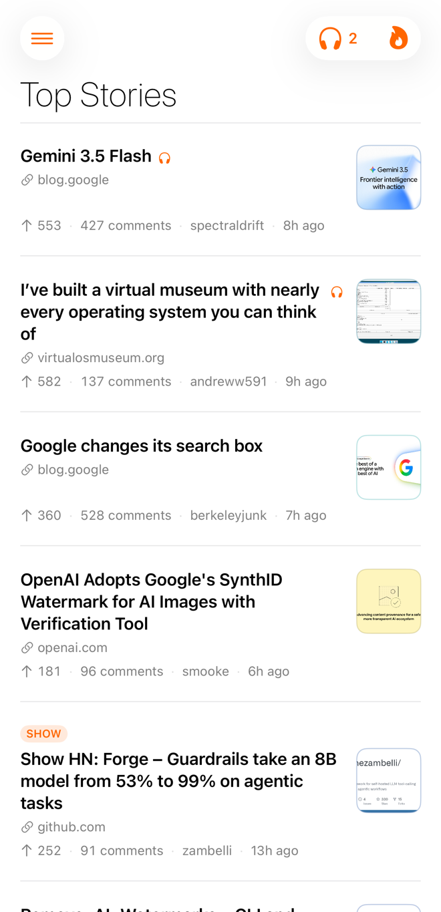
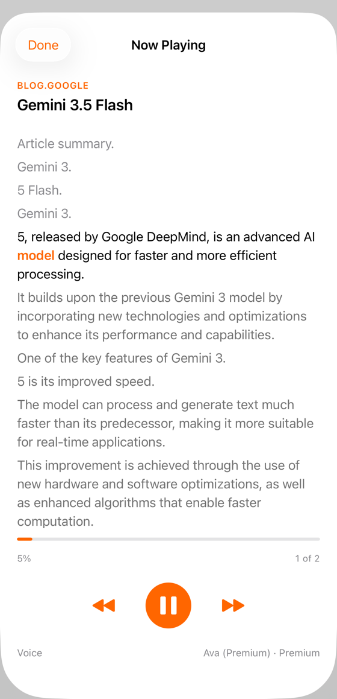
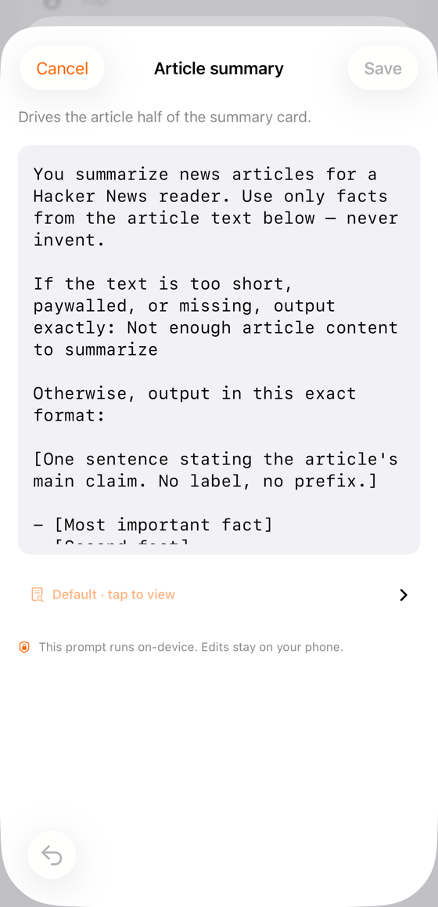
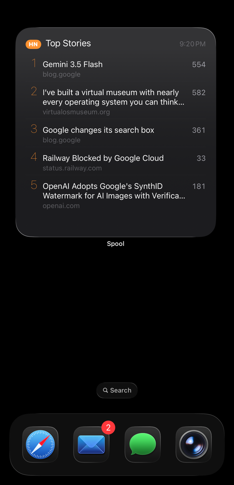
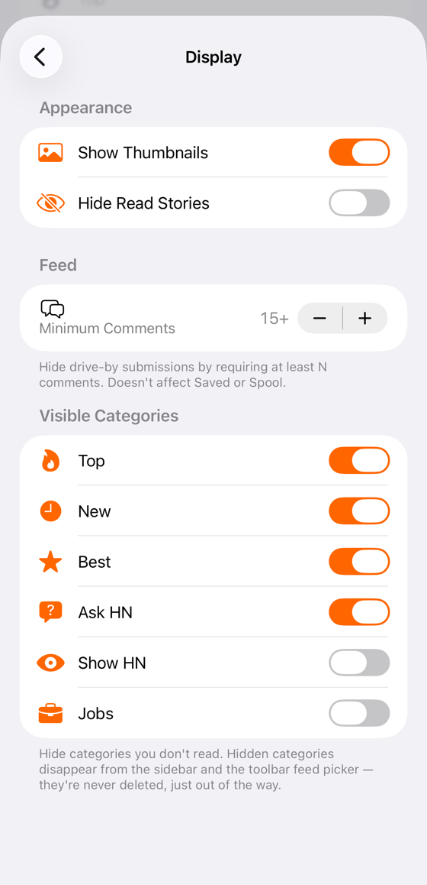

A calm iPhone and iPad reader for Hacker News with on-device AI summaries and a hands-free audio queue. Zero tracking, zero accounts required.

Features
Top, New, Best, Ask HN, Show HN, Jobs. Plus Best-of windows for today, this week, this month, this year.
Apple Foundation Models running locally on your phone. No API keys, no data ever leaves the device.
Add stories for hands-free listening. Each gets a 90-second conversational audio summary.
Highlighted text follows the spoken sentence so you can read along, pause to reread, resume to listen.
Collapse subtrees, jump between top-level threads. Sentiment-aware discussion digests, ask the thread a question.
Full Algolia-powered search with recent-query suggestions and relevance / newest sort.
Sign in with your HN account. Spool talks directly to news.ycombinator.com — no proxy server.
Bookmark anything for later. Spool items you've listened to land in a restorable Archive — never lost.
Home-screen widget with a feed picker. Pin Top, New, or Ask HN — long-press to switch.
Rewrite every system prompt in Settings. Defaults work great; tinker if you want a different style.
Real NavigationSplitView on iPad. iOS 26 Liquid Glass effects across the surface. Native dark mode.
Optional background check for replies to your comments. Silent when there's nothing; never spammy.
Saved stories show up in Spotlight. Siri can summarize today's top story via a shortcut.
Send any URL to Spool from Safari, Mail, Messages. Get a summary back without leaving the source app.
No analytics. No crash SDKs. No third-party scripts.
NSPrivacyTracking: false in our manifest.
Add stories to your Spool throughout the day. When you're ready, tap Play All and the on-device model reads each one's article + comments to you as conversational prose, in the order you queued them.
Sentence-by-sentence highlighting lets you follow the spoken text on screen. Speed up, slow down, skip. AirPods, CarPlay, lock-screen controls — it just works.

Spool ships with prompts tuned for HN — concrete tradeoffs, "Why HN cares," no fluff. But the model running on your phone is just following instructions, and those instructions are an editable text file in Settings.
Don't like the framing? Rewrite it. Want a one-line TL;DR instead of bullets? Rewrite it. Your changes stay on-device, version-stamped against the bundled default so you can see when ours has moved on.

The Spool widget shows the top stories from any HN feed — Top, New, Best, Ask, Show, or Jobs. Long-press to change the feed without leaving your home screen.
Three sizes. Tap any story to deep-link into the app at that thread. Refreshes itself every 30 minutes.

Spool was built by someone who reads HN every morning, for people who read HN every morning. It ships with sane defaults — and a set of knobs so you can make it behave the way you want.
Toggles for thumbnails. Hide-read across feeds. A minimum-comments filter that kills drive-by submissions. Pick which HN categories show up in the sidebar (skip Ask HN? gone). Every preference persists across launches, no account required.

Every AI system prompt — article summary, comments digest, audio variants, Q&A, section overview — is editable in Settings. Stored on-device. Versioned so updates surface as a soft "default changed" badge.
Skip Ask HN? Hide it. Want Jobs out of the picker? Hidden categories disappear from the sidebar AND the toolbar feed picker. Setting persists across launches.
Pin the widget to Top, New, Best, Ask HN, Show HN, or Jobs. Run multiple instances each pinned to a different feed. Configurable via the iOS widget editor — no app open required.
Hide drive-by submissions below your threshold. Set it once in Settings → Display. Applies to category, trending, and best-of feeds — never to your Saved list or Spool queue.
Mention notifications fire from a background refresh check. Off by default unless you flip the toggle. Cancelable from Settings without revoking iOS permissions.
Read the code, fork it, file issues. github.com/ctaloi/spool
/var/spool/news.
Spool comes from /var/spool/news — the canonical Unix path where
USENET news was cached on every news server in the 80s and 90s. USENET was the
spiritual ancestor of Hacker News: same culture, same threading, same crowd,
just thirty years earlier.
The path lives on as a quiet shoutout to where this all started — when reading the news meant your machine had it cached locally, and the conversation was happening between people who wrote the software they ran.
It also describes what the app does. Your queue is a spool. Pulled-down stories, ready to play.
No analytics SDKs. No third-party scripts. No "anonymous" pings to anywhere.
NSPrivacyTracking is set to false in our privacy
manifest.
Reading is anonymous. Signing in (to vote, post, reply) talks directly to
news.ycombinator.com and stores cookies only in the system
keychain. There's no Spool server. There never will be.